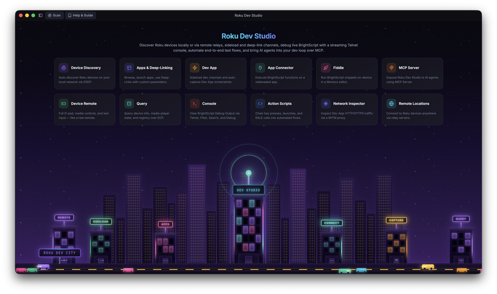

The unified tool for Roku development — control devices locally or remotely over the internet, no terminal required.
A single desktop application for developing and testing on Roku devices: remote control, sideloading, network inspection, an in-app BrightScript debugger, scripted automation, and an MCP server so AI agents like Cursor, Claude Desktop, and VS Code can drive a real device too.

Roku development is normally split across separate official tools — the Roku Remote Tool, the browser-based sideload installer, raw telnet, RALE, sca-cmd — that don't talk to each other. Roku Dev Studio doesn't replace Roku's own protocols (ECP, RALE, telnet, sca-cmd) — it wraps all of them in one GUI, one CLI (rds), and one MCP server.
| Task | Without Roku Dev Studio | With Roku Dev Studio |
|---|---|---|
| Remote Control | The official Roku Remote Tool, or raw ECP keypress calls via curl/Postman | One tab: full D-Pad, keyboard remote, and a floating mini-remote |
| Sideloading | The device's browser-based installer or a VS Code extension — one IP at a time | Sideload Relay — one push from your IDE installs, launches, and captures console on every targeted device |
| Debug Console | telnet <ip> 8085 in a raw terminal or through an IDE — no search/filter/save either way | A structured console with search, filtering, and saved logs |
| BrightScript Debugging | The socket debug protocol, usable mainly through a single IDE's extension | A standalone debugger: breakpoints, step execution, call stack, variables, watch |
| App Inspection (RALE) | RALE alone only inspects SceneGraph nodes — no way to call into a channel or exchange data with it | App Connector — extends RALE with the ability to call your channel's own functions and pass data back and forth (GET/POST-style), unlocking automation that didn't exist before |
| Network Traffic | A separately configured MITM proxy (Charles/mitmproxy/Fiddler) with manual device setup | Built-in local MITM proxy + optional hotspot packet capture |
| Static Analysis | sca-cmd output cross-referenced by hand against Roku's cert docs | Runs sca-cmd for you, with cert-requirement links straight to Roku's docs |
| Remote Locations / labs | Physical presence required — ECP only works on the local network | A bundled remote server bridges ECP over the internet |
| Repeatable Testing | Hand-rolled scripts around ECP and RALE | Action Scripts — build a flow (keypresses, queries, conditionals, waits) from a GUI, or run it headless via rds |
| AI-Agent Access | Nothing official | A bundled MCP server lets Cursor, Claude Desktop, or VS Code drive a real device |
A sample of what's inside — see the full tour on the Features page.
Full D-Pad, media keys, an optional keyboard remote, and a floating mini-remote you can pop open anywhere.
Live CPU, memory, and object charts for the sideloaded dev channel, right on the Remote tab.
Automatic SSDP discovery with subnet-scan fallback, local or via a remote server.
Browse installed apps, launch by App ID, and deep-link straight into content.
One-click device info, app list, media status, and any custom ECP query.
Sideload, launch, and auto-screenshot your dev channel, locally or on a remote device.
No device of your own? Sideload a bundled showcase channel and explore every feature from one title-bar button.
RDS advertises itself as a Roku over SSDP — one sideload from your IDE fans out to every targeted device.
Live Roku console logs and system commands over telnet, local or remote.
Automatic BrightScript crash and error detection with What / Cause / Fix guidance, live or on saved logs.
Attach over the socket debug protocol: breakpoints, step execution, call stack, variables, watch.
Talk directly to your channel's own functions over RALE, with live return values.
A local MITM proxy decrypts your dev channel's HTTPS, plus optional hotspot packet capture.
Reopen a saved capture — .json, HAR, or .pcap — in the same read-only two-pane view.
Build repeatable automation — keypresses, queries, conditionals, waits — and run it from the GUI or headless via rds.
A bundled MCP server lets Cursor, Claude Desktop, or VS Code drive a real device while the app is open.
A Monaco-powered BrightScript scratchpad that sideloads and runs your snippet in one click.
Open a saved console log in its own window with the same find and structured-log tools.
Runs Roku's own sca-cmd for you, with cert-requirement links straight to Roku's docs.
Every core action, scriptable from a terminal — discovery, ECP, sideload, screenshots, and more.
The same core library powers a standalone relay so you can manage devices in any location from your desktop.
Tune connection timeouts, Device Performance sampling, Privacy Mode, and more from one place.
Six languages, switchable live from Settings — no restart, no reload.
An uncaught error becomes an actionable, GitHub-ready report instead of a silent failure.
Developer Mode, Privacy Mode, encrypted password storage, and other under-the-hood tools.